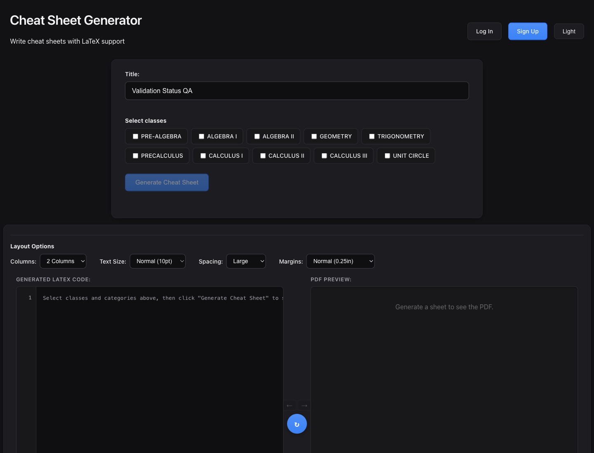

What it does
The app helps students and instructors assemble class-specific reference sheets, re-order formulas, tune page layout, and preview the final PDF output while working directly with LaTeX.
React + Django + LaTeX
Build math cheat sheets from grouped formulas, edit the generated LaTeX, and export a compiled PDF from a single workspace.
The main workspace keeps formula selection, layout controls, LaTeX editing, and PDF preview in one screen.

The app helps students and instructors assemble class-specific reference sheets, re-order formulas, tune page layout, and preview the final PDF output while working directly with LaTeX.
Select grouped math topics and generate a starter LaTeX sheet instantly.
Preview PDF output, manually recompile edits, and auto-recompile when layout options change.
Store progress in the browser or save full cheat sheets to the backend.
Download the generated LaTeX source or the compiled PDF.
http://localhost:5173http://localhost:8000/api/health/docker compose up --buildThis GitHub Pages site is a project overview only. The full app needs the Django API to generate and compile PDFs.